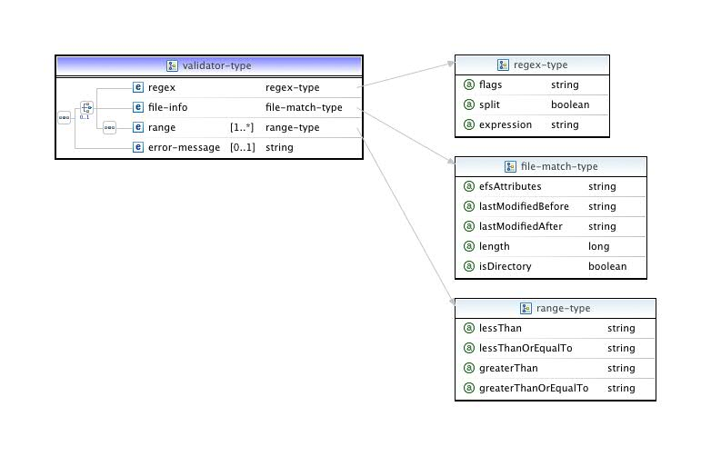
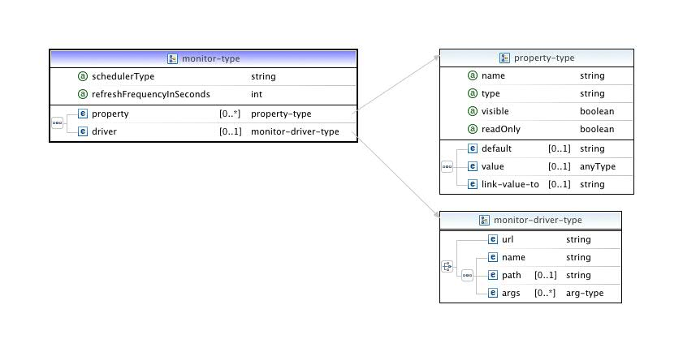

A number of new features and changes have been included in the 6.0.0 release.
property element has been removed completely. Since properties and attributes
were essentially identical, removing the property element reduces confusion as to when they should be
used.buttonId attribute on a widget is now global. In the previous version
button IDs were local to each tab. This allows a button on one tab to change the state
of a control on a different tab;control-state element now supports obtaining state by comparing
an attribute value to a string;saveValueTo attribute on a widget has been renamed to simply
attribute. This is to reflect the fact that an widget can read from and
save to an attribute.arg element now has an attribute attribute. If
supplied, this will be compared to the isUndefIfMatches string rather than the element content in
order to determine if the argument is defined or not.
Aside from some significant bug fixes, there are a number of new features with the 5.0.1 release.
widget component has been split up into
three components: widget , button-group , and browse ;action push-button
functionality has been added;control-state
elements have been added to all UI control descriptors;import
controller type has been modified (largely for maintaining uniformity
of implementation) to subclass the dynamic controller;In addition, some tweaking of the SWT "knobs" was necessary to get the XML to reflect more closely the behavior of the Java classes (especially in terms of defaults).
PTP allows you to launch and monitor
applications on local or remote resources using systems
which are configured from an XML file via JAXB (
javax.xml.bind
) technology.
The target system configuration files:
A target system configuration consist of two components, a "control" component, which governs the configuration, launch and cancellation of individual jobs entirely from the client end, and a "monitoring" component, which displays job status as well as global information about the HPC resource. The monitoring system uses built-in types provided by the PTP distribution which support most standard scheduler types. Adding a new configuration will normally entail only the specification of its control part. The default mode of usage is that the client stages the necessary components (mostly Perl scripts) automatically, but in a future release, the monitor will also be capable of connecting directly to a system-wide (web-based) deployment.
The "control" component of the target configuration is associated with a remote connection when the user configures a "Parallel Application" run configuration using the standard Eclipse launch configuration mechanism. This remote connection is the used whenever the control system needs to send or receive data, such as when running a command, or copying a file.
The "monitor" component of the target configuration is associated with a remote connection via the "Monitors" view in the "System Monitoring" perspective. This connection is used for sending and receiving data required to perform the monitoring activities. Note that the "control" and "monitor" component's remote connections are independent, although they can both share the same connection (which is the normal case).
The following is a guide to the target system configuration XML definition. Those interested only in using configurations already provided with the PTP distribution should consult the User Guide under the relevant scheduler section.
We provide here an introductory tutorial slide set demonstrating some simple additions to a pre-existing configuration file. For some example XML illustrating various aspects of the schema (particularly UI features), we also provide a .zip file (for PTP release 5.0.1).
The preference options are aids for debugging configuration changes. The first turns off configuration file caching. This will ensure that when you make changes to the configuration, they will automatically be picked up by PTP.
The other options are useful if you are writing a new stream tokenizer for a command; checking all four options usually produces quite a bit of output, so in that case it may be advisable to log the results to a file rather than stdout (at any rate the latter would be available only if PTP were running as an application within the Eclipse IDE platform, which is not the case for those modifying the XML simply from within the PTP package installation workspace).
PTP is model-driven ; this means that its functioning and appearance are determined by a set of definitions provided via an XML file. What follows is a detailed explanation of the schema governing the resource manager XML definition. The latest version of the target configuration schema is available at the URL http://eclipse.org/ptp/schemas/rm.
The top level of the XML configuration is the resource-manager-data type as shown in the diagram below.
This type specifies all the information needed in order to submit, control, and monitor jobs on a target system.

The resource-manager-data comprises three elements: site-data,
control-data and monitor-data. In addition, a configuration name
is specified using the name property. This name must be unique.
The site-data element provides an optional place to set fixed
or default remote site information. The connection strings are URIs
which are specific to the PTP RemoteServices definitions. The scheme
for these URIs will usually name the specific remote service (e.g,
rse:
or
remotetools:
; local is simply
file:
). The host name and port given here will appear as defaults in the
resource manager selection wizard when you create a new connection.
The principal section of the schema is devoted to defining the
target system control-data part. The top-level control elements
include attributes, files to be staged, job script to
be generated (if any), commands specific to the resource manager, and
the layout of the launch configuration Resources tab.
The monitor-data section of the schema specifies the type of monitoring
to be used for the target system, and any monitoring system specific information
that might be necessary. If the monitor-data section is omitted, monitoring
for the target system will be disabled. This is typically the case when
configuring direct access to runtime systems such as MPICH2 or Open MPI.
The control-data element is used to specify the control information necessary to submit and
control jobs to the target system, and is of type control-type. This type is defined as follows:
The control-type type is divided into four main sections:
An attribute is a variable that contains specific information used to control the target system. Attributes are often (but not necessarily) visible in the user interface. The value of an attribute can be any Java primitive type, a list of strings, or a map of strings.
[TODO: Check if this is still correct]
If
stdout
and
stderr
from a scheduled job is to be delivered to the client, the attributes
stdout_remote_path and stderr_remote_path should be
included in the resource manager attribute set. Similarly, the native
designation for the selected queue, if used, should be linked to control.queue.name.

Each target system configuration constructs an "attribute map" which contains all the
attributes known by the system. Attributes are either defined in the configuration file or
are created dynamically as the result of processing the output from commands.
Other configuration elements reference attributes by obtaining a
string representation of attribute fields using the Eclipse variable resolver syntax:
${ptp_rm:name#element}
where name is the name of the attribute and element
is the name of an attribute element
(see further below on the
specific elements for attributes.)
All attributes defined in the configuration are included in the map.
The following pre-defined attributes are also added at runtime:
control.user.name
control.address
control.working.dir
executablePath
progArgs
directory
In addition, the following attributes may be linked (see below) to other attributes to
provide an implementation-independent
mechanism for referencing the queue and for any remote output files produced in
connection with the job submission.
control.queue.name
stdout_remote_path
stderr_remote_path
The following properties are available when defining new attributes:
| Property | Description | Default |
|---|---|---|
| name | Used to specify the name of an attribute. This name can then be used to look up the values of the attribute's elements. | none |
| type | Specifies the type of the attribute value. The type is primarily used by the user interface elements to determine how values are to be input. Values can always be accessed as strings regardless of their type. | String |
| visible |
Indicates that the user will not be directly changing the value of the
attribute via the user interface. Certain widgets (such as
the
attribute viewer
) check this to see if the attribute should be included
automatically in its list.
Always mark attributes which are the targets of attribute (see below) as visible="true"; if this value is false, the attribute will always be passed to the configuration/environment of the resource manager; selection/exclusion of sets of attributes pertains only to those marked visible. |
true |
| status | An optional property for capturing the validity of the attribute at runtime or for a particular installation, if such information is made available by the system. | true |
| readOnly | Used to mark the attribute as read-only. The value of a read-only attribute will always remain the default value. | true |
| translateBooleanAs | Can be applied to boolean values which should be represented as strings rather than "true" and "false". A comma-delimited pair is used to indicate the string equivalent to the boolean value. e.g., "YES,NO" would mean true yields the string "YES" and false the string "NO". | null |
| min and max | Used to give the upper and lower bounds for integer attributes. UI elements such as the spinner widget will use this information. | null |
Attributes are structured objects that carry more information than just a value. This information is specified using elements in the XML specification. Elements can be accessed using the Eclipse variable syntax described in the Attribute Map section.
| Element | Description |
|---|---|
description |
Provides a brief one-sentence definition of the attribute. This information is displayed by the user interface. |
tooltip |
Provides a string that will be displayed when the mouse hovers over the attribute in the user interface. |
choice |
Provides a predetermined, fixed set of values to choose from. These are specified as a comma-delimited string and will appear as the items of a combo-box. |
items-from |
Links the combo items specified in a choice element to another
attribute value (whose type must be
java.util.Collection).
|
default |
Specifies a default value for the attribute. Default values
must be primitive types. If no default value is specified, then the
value of the attribute will be null.
|
value |
Represents the current value of the attribute. Only used to fetch the value of an attribute. |
link-value-to |
If provided, the attribute gets its value from the attribute specified, unless that attribute has an undefined (empty) value. In this case, any default defined on the present attribute will be used. This feature is primarily intended for defining dependent attributes whose values are not directly modified by the user. |
validator |
Specifies a validator for the attribute. Used to enforce semantics of the attribute value. |
Attributes carry optional validators which allow you to enforce syntactic rules, numerical ranges (each with one or both boundaries; these are OR'd) or file-system semantics on the value when the user enters text.

The validator makes use of the
regex
type (also used in the parser or tokenizer; see below), along with a special
file-match
type. A regex can be used to match by setting the expression
property. To split the segment into tokens on the basis of the
expression, set the split property to true (this applies only to
the
match
type discussed below). The expression should
follow the grammar in
java.util.regex
; the flags are those made available in the
java.util.regex.Pattern
class (consult the Javadoc for explanations):
These can be OR'd in the usual manner. NOTE: when using the
regex on the match type, the
expression can contain variable references to be resolved in the
environment.
The file-match type
specifies the attributes pertaining to
org.eclipse.core.filesystem.IFileInfo. The
efsAttributes property is an OR'd string of the EFS constants:
The lastModifiedBefore and lastModifiedAfter properties are specified using the format
yyyy/MM/dd HH:mm:ss.
A "managed file" is a file that may be required for the job, but which may not be present on the host on which the job will run. These files may either be external to Eclipse or may be generated from the environment in conjunction with the job submission, but in either case need to be copied to the target system just prior to it.

Managed files are added to the definition in groups determined by
their shared staging location, specified using the file-staging-location element,
which is a path relative to the working
directory of the connection. Managed file properties are as follows:
| Property | Description | Default |
|---|---|---|
| name | A mandatory name for the managed file. | N/A |
| uniqueIdPrefix | Specify that multiple copies of a generated file should be distinguishable. | false |
| resolveContents |
Pass the contents element through the attribute resolver (see below).
|
true |
| deleteSourceAfterUse | Specify that local copies of generated files should be retained. | false |
| deleteTargetAfterUse | Specify that the file should be deleted from the target system after use (not currently implemented in the general case). | false |
Note: The batch script is staged by default to
.eclipsesettings in the user's home directory and deleted after the submit call returns.
However,
it is possible to use the
file-staging-location
on the
script
element to set the batch script path explicitly.
A managed file definition allows one of three possibilities as to specifying content:
| Element | Description |
|---|---|
path |
Specifies the location of an external file, which can be either a hard-coded path or a reference to an attribute value. |
contents |
Specifies the file contents as a string. In this case the resolveContents property is used to indicate whether to pass this string through the attribute resolver, substituting any references to attribute values it may contain. However, this string should not contain "${...}" sequences which do not actually refer to Eclipse variables (such as batch script variables), or the resolution will fail. If resolveContents is set to false, you can still provide this text element with a single reference to an attribute, in which case the value of that attribute will be used as is, without further dereferencing. |
line |
Specifies the file contents using line-type elements.
This is the preferred and most flexible way to represent the
contents of a file to be generated. The line-type type is discussed in more detail
below.
|
When the submit call is executed, managed files are generated if necessary, then their target paths are determined as follows:
path element is used, the target path
becomes staging_directory / name_of_pre-existing_file.content or line elements are
used, the target path becomes staging_directory/
[uniqueIdPrefix]managed-file-name).
Schedulers such as PBS
or LoadLeveler normally use a job script in order to specify the resources
required to launch a job (although they can be configured to work without a batch script.)
Using a script file generally provides the most flexibility in configuring the job submission.
A
script-type
file is just a special
case of the
managed-file-type
type

If the script is specified in the configuration, its path is
automatically added to the list of managed files to be staged to the
appropriate directory (by default .eclipsesettings, or
as indicated by the
file-staging-location
element), so there is no need to include a script entry explicitly
under the
managed-files
element. The following properties are available for scripts:
| Property | Description | Default |
|---|---|---|
| insertEnvironmentAfter | Supplies a line number indicating where in the script to add any extra environment variables set through the Environment tab provided in the launch configuration. This provides control over whether these should overwrite previously defined environment variable values. | -1 (don't insert) |
| deleteAfterSubmit |
Indicates that the script target should not
be retained. Unlike the
managed-file-type, however, the local copy of the generated script is always deleted.
|
true |
A reserved attribute,
managed_file_for_script, is used to reference the script's path on the target
resource in the submit command, e.g.:
<arg>qsub</arg>
<arg>${ptp_rm:managed_file_for_script#value}</arg>
Note: If the
import
tab (see below) is used to provide an
external or workspace edited batch script to the run, nothing extra
need be done in the configuration. The
path for the script is handled automatically.
The line-type is used to explictly specify lines for a script or managed file. Each
line-type
element contains zero or more
arg-type
elements. The text specified by the arg-type elements is placed on a single line, separated by
whitespace. The sequence is terminated by a line separator.

An
arg-type
element is used for script and managed file content as well as in the
definition of commands. Its text element contains the actual argument
string which is passed to the attribute resolver before being written
out. The default behavior of the argument resolver is not to
include arguments whose values are null.
The arg-type type provides the following properties:
| Property | Description | Default |
|---|---|---|
| attribute |
Apply the match to the value of the referenced attribute rather than the content of the element. For example, a boolean attribute could be used to control the inclusion/exclusion of the argument as follows: <arg attribute="useFlags" isUndefinedIfMatches="false">${ptp_rm:flag#value}</arg>
|
"" |
| isUndefinedIfMatches |
Specifies a regular expression that is compared to the argument after resolution. If the regular expression matches, then the argument will be omitted from the result. For instance, if a flag should not appear when the value it precedes is an empty string, one could write: <arg isUndefinedIfMatches="-f">-f
${ptp_rm:flag#value}</arg>
For the purposes of matching, trailing whitespace is trimmed from the resolved argument, so there is no need to specify this as part of the regex used to match. |
"" |
| resolve | Indicates that the text element should be treated as a literal and no attribute resolution performed on the string.. The resolve property must be set to false if the string contains batch-type variables (e.g., ${HOME}) which should be resolved by the remote shell and not inside the Eclipse client. | true |
managed-file paths
@jobId is a special attribute name designating the runtime id for a job instance. In the lifecycle of the run/launch (submit) call, this value begins as an internally generated unique id (uuid) which then is replaced by the real job id after the job has been submitted.
The @jobId attribute, along with the target paths for
managed-file
elements, are not known at configuration time (i.e., before the user
hits "Run"). While the former is made visible to the parsers and the
returned status object of the submit command, neither is in the scope
of (available for reference in) other managed files or the
script
element, because these latter elements are generated just prior to the
actual submission.
If the
script
needs to refer to the @jobId, it must do so via an environment variable
made available by the particular scheduler it is written for. An
example of how to reference the target path of a
managed-file
inside the
script
is included in the tutorial slides. This
essentially involves defining an environment variable in the submission command's
environment, with a reference to the
managed-file
path attribute as its value, and then using this environment variable
inside the
script
.
Commands are used by various parts of the control system in order to communicate with and control
aspects of the target system resource manager. Commands are system calls, either to a local or remote OS,
depending on the connection defined for the target system. A command is always
executed through a Java API (the "process builder") which typically results in a
bash -c command (possibly via an ssh connection.) The first argument of
the command is the name/path of the executable. Arguments are then
specified by an arbitrary number of
arg-type
elements.
The following commands are supported by the control-data-type:
| Element | Description |
|---|---|
start-up-command |
A command that is run to initialize the configuration. This command is usually used to check for correct versions and to obtain dynamic configuration information (e.g. the list of available queues) from the target system |
submit-interactive |
Command to submit a purely interactive job to the target system. An interactive job is defined as one that the user would normally run from a login shell. |
submit-interactive-debug |
Debug version of the |
submit-batch |
Command to submit a batch job to the target system. This type of job submission is normally asynchronous, i.e. the user submits a job and at some later point the job will be run. |
submit-batch-debug |
Debug version of the |
get-job-status |
A user-initiated (on-demand)
request to refresh the status information for a submission. Normal
(polled) updates, on the other hand, are the responsibility of the
|
terminate-job |
A command to remove a job from the target system (terminating
a running job if necessary). Note: if the submission type is interactive, the
|
suspend-job |
An optional command to suspend a running job. |
resume-job |
An optional command to resume a suspended job. |
hold-job |
An optional command to place a job on hold. |
release-job |
An optional command to release a held job. |
shut-down-command |
A command that is run to clean up after a job has been launched. |
button-action |
An arbitrary command that can be associated with a button exposed through the launch configuration Resources tab (see further below). |
Note: A configuration may only define either a batch or an interactive launch mode, although each launch mode may have only two submission modes, run and debug. (Future versions may allow batch and interactive to coexist in a single configuration.)
A command-type element is used to define a command.

The following properties are available for a
command-type
element:
| Property | Description | Default |
|---|---|---|
| name | Specifies a name for the command. | N/A |
| directory |
Specifies
where the command will be executed. This
defaults to the "home" or working directory of the remote control
connection (the control.working.dir attribute).
|
control.working.dir |
| redirectStderr |
Specifies
that both output and error
streams are sent back on stdout.
|
false |
| streamBufferLimit | Specifies the buffer limit for stream readers. | -1 (use system defined) |
| replaceEnvironment | Specifies that the environment set on the command should entirely replace the shell environment | false (append the command environment) |
| waitForId | Specifies that the output stream for the command is being parsed for an id which will appear as an attribute in the environment during the command execution, and that the execution should not return until it sees this id. Most submit commands will have these semantics. | false |
| ignoreExitStatus | Prevents an error being thrown in the case of non-zero exit of the command. This is usually used in the case of a command that incorrectly returns a non-zero exit status. | false |
| keepOpen | Specifies that the command should be held open for potentially repeated redirection of input, such as when sending commands to an interactive partition that has been allocated by a batch scheduler. There can only be one such command open at a time. | false |
| flags |
Specifies additional flags that will be passed to the remote connection.
The flags property is an OR'd string of three possible values:
|
NONE |
Commands that set the waitForId property to true are treated specially. These are job submission commands which produce a job id to replace the internally generated uuid, and are responsible for setting the status property of the @jobId attribute.
| COMMAND TYPE | TOKENIZER STATES |
|---|---|
| batch | SUBMITTED |
| interactive | RUNNING |
| interactive, keepOpen | SUBMITTED, RUNNING |
This table shows the various states that must be set depending on
whether the command is interactive or batch. Commands that wait for
an id must be provided with a stream tokenizer
which recognizes and sets the @jobId state. Batch jobs will usually have a
tokenizer which recognizes and sets the state to SUBMITTED when the job is
submitted. The monitoring system will normally handle setting the job state
to RUNNING (although this may also be done by the get-job-status command.)
Interactive jobs, which just run the command as soon as possible,
can set the job status directly to RUNNING. In the case of interactive
jobs that set keepOpen=true (e.g., qsub -I
for PBS, which also requires a pseudo-terminal to connect remotely),
there will usually be a pause before the terminal job is actually
scheduled. In order to allow the user to see that the job has been
accepted and is pending, the tokenizer needs to set both SUBMITTED and
RUNNING states, the latter when the job has actually started.
Command arg elements, the input element, and the environment element all
make use of the arg-type type for specifying arguments. For the
name-value-pair
type comprising the latter one can as simple alternative set the value
attribute to a string (which will be resolved first in the current
environment); finer-grained control over the resolution of the value,
however, requires the use of the
arg
type. When there is
input
present, it is directed to the input stream of the command. If the keepOpen
attribute is true, a check will be made to see if there already exists
an open process (which is also alive), which will then be used;
otherwise, the arguments are executed, then the input arguments are
given to the process. With an open command/process, the input
arguments can be fed repeatedly to the same process; this allows, for
instance, for continuous testing of an interactive job in the same
interactive session.
The environment element allows attribute values to be passed to the command's environment
prior to execution.

In the simplest form, the name and value properties are used to specify
the name of the environment variable, and a corresponding value that can be resolved from the attribute
map. Finer control of the environment variable can be obtained by using the arg-type type.
The preserve property can be used to override the command-type replaceEnvironment property.
If this property is set to true, this environment variable will be passed to the remote command regardless
of the replaceEnvironment property setting.
It is possible to attach a parser (which we also refer to as a tokenizer) to the
output and error streams of any
command-type
in order to capture information and use it to side-effect existing
attributes, or to generate new ones on the fly. While
the parser is not completely general, it is capable of a wide range of
tasks which would typically be required in the handling of output from
batch and runtime systems.

The main parser elements used by the tokenizer are
target, match, and test.
See the tokenizer examples demonstrating
various usage scenarios.
The
type
element will most commonly not be set, meaning the built-in parser
will be used; however, it is possible to implement a custom parser as
a contribution to the
org.eclipse.ptp.rm.jaxb.core.streamParserTokenizer
extension point, in which case this element should be set to its
extension id. Note that the extension requires the class to implement
org.eclipse.ptp.rm.jaxb.control.internal.IStreamParserTokenizer,
which is a Runnable interface with an initialize method which passes
in any job id plus the current environment map; the details of such a
parser's implementation are not, however, configured from the XML
document.
The built-in tokenizer can read the stream in two different ways. If delim is provided, the stream is split using the indicated value. The string should only be one character in length (escaped or non-escaped). Provision is made for the '\r\n' (Windows) two-character delimiter internally; in this case the delimiter should be set to "\r" (however, as already mentioned, PTP does not generally guarantee that system calls will work on Windows). Setting includeDelim means that the delimiter will appear as the last char on the returned stream segment.
The second way to read from the stream is to provide a maxMatchLen size; what this indicates is that whatever substring needs to be found on the stream will not exceed this length. The stream is then read in swatches of maxMatchLen, with the internal buffer set to twice this size, so that each successive read shifts the buffer to the "left" by one length. This guarantees that all such substrings will eventually be matched.
Sometimes a sort of "look-ahead" paradigm is necessary. For instance, one may need to match a segment or segments whose position is defined from the end of the output, but you do not know in advance the actual stream length. In this case, one can opt to read until the end of the stream (all="true"), retaining only the last N buffer-lengths or delimited segments, as indicated by the save field. When the parser reaches the end of the stream, it will then apply the various targets to each saved segment in order.
applyToAll is discussed further under
target
. The
exit-on
element indicates that the tokenizer should quit immediately when it
encounters this pattern;
exit-after
indicates that the tokenizer should quit when it encounters this
pattern, but should first apply the current segment to its targets.

A tokenizer may be given any number of
target
elements. The target denotes a particular value (object) currently in,
or to be written to, the environment, which will be side-effected on
the basis of the result of the tokenization. A target in turn contains
match
elements and
test
elements; the former are run as part of the stream processing; the
latter are run after the stream processing has been completed. The
optional
else
element is applied only if there are no other tests defined or if none
of the defined tests succeed).
The target object is either to be constructed at match time, or it
pre-exists in the environment. If not constructed, ref points to the name of the
attribute
in the environment (recall that for the runtime job identifier, @jobId
is used).
Note: when new targets are constructed, there is a merge
operation at the end of tokenization which attempts to combine objects
into a single instance identified by their name attribute. This
assumes that such names will be unique and that any other values to be
set on the object which are not explicitly bound in some way to that
name via the match pattern will appear on the stream before a new name
does (see ex. 5 in tokenizer examples).
The default behavior of this merge is that it will fail
if two objects with the same name but differing values are generated
by the parsing. (This excludes add and put
operations which create a list or map; in these cases, the two
collections or maps will be combined into one. This does NOT
work, however, for append actions.) To allow duplicates,
set the allowOverwrites to true; in this case, successive
duplicates simply replace the preceding object.
The default behavior of the tokenizer read-match sequence is as follows:
Only one qualifying target is processed for any given segment read, and for the given target, the first pattern matched is the one processed for its actions. This is basically the "OR" semantics of normal logic programming; hence the implementer must be careful to arrange the matches inside a target in such a way that the more specific match patterns precede the more general.
Three boolean fields allow you to modify this behavior.
tokenizer-type
element means take the unmatched part of the read stream and pass it
to the next target, even if there was a previous match; this allows
you to capture more than one regex pattern per stream segment (see
ex. 6 in tokenizer examples).target-type
element means do not try to match an already matched expression until
all the others are matched (i.e., a logical AND instead of OR governs
the set of matches at successive calls to the target match
operation); this allows one to use, for instance, .* repeatedly but
set different fields of the object with the resulting match (see ex.
5 in tokenizer examples).match-type
element indicates to the tokenizer that the matched target be
promoted to first position in the list of targets. This is useful
when there is an ordering which expects types of attributes
to be grouped in sequence on the stream (see ex. 4 in tokenizer examples).When a match is found, the set of action types it contains are all applied.

Each of these types corresponds to an action to be taken on the indicated field of the target object.
| Element | Description |
|---|---|
set |
sets the value of that field |
append |
adds to a string buffer, whose string value will be set on the field |
add |
adds to a list to which the value of that field will be set |
put |
places a key-value pair in a map to which the value of that field will be set |
throw |
throws an exception and (optionally) also sets the value of the field |
The actions listed here all have
entry-type
children, either single (
set, throw
) or potentially multiple. All of these except
throw
also allow you to force the creation of a new object (forceNewObject)
each time it is applied; the new object then replaces the current one
for successive actions in the match.

This value-abstraction allows one to set key (for maps) and value as literals or references to other attributes to be resolved in the current environment; to reference the matched segment parts one sets keyIndex and valueIndex if the regex was used to split the segment; otherwise, keyGroup and valueGroup refer to the capture group of the regex pattern, with group 0 referring to the entire match.

As mentioned above, the
test-type
elements are all run after the tokenization has reached the end of the
stream. This class of actions is useful for setting values based on
other values produced during tokenization. A test is one or more
comparison operations plus a set of actions to apply to the target
fields in the case of either success or failure (the "else" element);
see ex. 3 or the "get-job-status" example in tokenizer examples.
The op attribute can be one of the following comparisons:
| EQ | : | equals |
| LT | : | less than |
| LE | : | less than or equal to |
| GT | : | greater than |
| GE | : | greater than or equal to |
When the operation is set to one of these, it is expected that the two
value
elements will be used. As usual, these elements can be literals or can
contain variables to be resolved into a string type;
#FIELD
refers to the value of the given field on the current target; the
strings will be converted in conformity with the inferred (primitive)
type of the comparison. The
else
element also pertains to comparison tests; the actions listed there
will be taken upon failure of the comparison.
The op attribute can also be a logical operator [AND, OR, NOT],
in which case the embedded
test
object should be used; these can be nested to an arbitrary depth, but
of course must bottom out in a comparison operation.
| Example | Description |
|---|---|
| 1 | output is a list of line-separated queue names to be assigned to the known attribute "available-queues" |
| 2 | output is to be searched for its final line which should contain a job id of the form "[digits].[chars]" |
| 3 | indeterminate number and order of lines containing parts of attribute definitions, but each line bearing a distinct id (e.g., openMPI attribute discovery) |
| 4 | indeterminate number of definitions, but grouped by caption; use of moveToTop to promote the target to the top of the list when the caption appears |
| 5 | similar to 4, but without delimiter (implicit ordering) |
| 6 | similar to 4, but with indeterminate type order and using buffer + DOTALL | UNIX_LINES |
| 7 | indeterminate number of attribute definitions, but on single line |
| 8 | looking for values interspersed in the stream but which will not exceed 32 chars |
| 9 | successive names/values, in order, but staggered |
| 10 | forced merge |
| 11 | exit-on |
| 12 | exit-after |
| 13 | get-job-status (use of tests) |
The UI component which needs to be configured in conjunction with the
resource manager control is the Launch Tab, which is actually
the main area of the Resources Tab, one of the six tabs
comprising the Run Configuration wizard or the seven tabs
comprising the Debug Configuration wizard. The purpose of this
component is to allow the user to set up the job by providing values
relating to resource requirements or to the properties of the job in
general. In other words, it is in this component that the user can set
the values on the
attribute
elements making up the configurable environment as defined in the XML.
Specifying the composition and layout of this component can be tricky
and tedious because it deals with widgets defined by the Eclipse
JFace
library and with their underlying implementation in
SWT
. We intend in the near future to provide some standard "templates"
for typical widget groups that can be cut and pasted into the XML
definition. Some of this can already be achieved by importing into the
workspace a provided definition (such as for the PBS resource manager)
and modifying it or borrowing from it. This is, in fact, the approach
demostrated in the tutorial.
Throughout the following, it may generally be assumed that
fields such as style, foreground, background,
etc., take string equivalents of the corresponding SWT
constants (e.g., "SWT.LEFT", "SWT.VERTICAL", "SWT.NONE") which can be
OR'd (using "|") wherever they would be in Java code. We will not
exhaustively specify here which constants pertain to which widgets,
because in most cases we have tried to reflect very closely the names
of the SWT object types and fields, and this information
can be found by consulting the Javadocs relative to the widgets in
question.

As seen from this top-level specification, the Launch Tab can have any
number of
dynamic
tab-controllers, "dynamic" meaning configurable from the XML, which
will discuss in more detail in the following paragraphs.
There is also a fixed
import
controller type (implemented as an extension/subclass of the dynamic
controller, in order to provide uniform handling of the environment);
this component allows you to browse the workspace to set a custom
script as the one to run. Its main text area widget is read-only; any
editing of the script must be done through the workspace editor. The
browse is local only, so remote scripts should first be imported into
a local project in the workspace (using the remote systems import
wizard), and then captured by this controller's browse button.
The configurable part of the import tab is an optional attribute viewer for selecting the variables from the environment which you wish to pass to the launch command along with the script. The values set here should correspond to whatever the script contains; they are set for the benefit of the internal consistency of the PTP client, and do not override those hard-coded in script. For an example, see the Import PBS Script tab.
The
dynamic
controllers belong to the
tab-controller-type, which contains an arbitrary number of
tab-folder,
composite,
widget,
browse,
button-group,
action,
or
viewer
elements; as will be seen shortly, the first two, which are
"containers", are potentially recursive elements, so that one can nest
widgets in the usual manner. For all intents and purposes, the
tab-controller-type
is the same as a
composite, but without the group attribute and with the extra field for
controlling shared widgets.

The includeWidgetValuesFrom field is important. By default, it
is set to empty, meaning that the subset of the total resource manager
environment represented by the controller's widgets is all that will
be passed to the actual job configuration when the job is launched
from this tab. This behavior can be changed by giving a
comma-delimited list of the
title
values for other controllers. In this case, the configuration for the
job, when the "Run" button is pressed with this controller being the
visible one, will also include all the attributes
valid for the listed but currently invisible controllers.
ATTRIBUTE NAMES vs VALUES
While this field controls the inclusion or exclusion of attribute names in the configuration, their values are always shared across the controllers (there is only one environment); thus if a variable value is changed on one controller, and this variable is also exposed on another, the value for that variable will also change on the other controller when it becomes visible; similarly, if the user switches off a controller to another having only a subset of the first controller's variables, the variables not represented on the second controller will become undefined or return to their defaults.
Note that the union of valid names is not transitively closed; that is, if Tab1 has includeWidgetValuesFrom="Tab2", and Tab2 similarly has includeWidgetValuesFrom="Tab3", Tab1 will get only the valid values local to Tab2. Note also, that if there are names which intersect with strictly local widget targets, the local settings (visibility, selection, enablement) still determine whether they belong in the set of valid attribute names.
The showViewConfig and showViewExcluded fields allow
control over whether the "View Configuration" and "View Excluded"
buttons appear at the bottom of the tab (the "View Script" button
appears if the configuration contains a
script
element). showViewConfig is true by default; this button brings
up a scrolling dialog which allows you to inspect the current
configuration (that is, the one relevant to the visible controller). showViewExcluded
is by default false, and should only be set if the resource manager
processes attributes discovered by a command at run
time; this dialog allows you to see which ones have been marked
invisible; unlike invisible predefined attributes,
which are always included, invisible discovered
attributes are always excluded from the configuration and thus
do not persist across resource manager sessions.

The
tab-folder
is a container which looks like a file-folder, with tabs running
across the top or bottom (style includes SWT.TOP, SWT.BOTTOM).
Each tab label corresponds to a
tab-item
which provides the actual visible content. The
tooltip
pertains to the entire folder.
The
tab-item
is another all-purpose "container" in which all widget types can be
embedded, but distinguished from the composite
in that it can only be the child of a
tab-folder
and that it can have a tooltip (which appears on the tab).
As with
composite
(see below), the tab folder and tab item take
layout
and
layout-data
elements; these closely reflect their
SWT
objects and types; for further explanation we refer the reader once
again to the relevant Javadocs.


The main container, of course, is the
composite
; its sub-type, the group (group="true"), allows for decoration
and a title, while the simple composite acts as a widget holder and
has no visible characteristics, though it does have a layout. As is
evident, composites can be contained in composites and tab-items, and
tab-folders can be contained in composites.

It should be evident that all the XML elements corresponding to UI SWT
control
types have been given
control-state
children.

The purpose of these elements is to provide an optional way of setting
the enabled and/or visible states of the control on the
basis of the state of button (checkbox/radio) selection or the value of an attribute. One can
define two such elements per control, using one of the show/hide or
enable/disable pairs. Each of these is associated with a
control-state-rule:

The basic rule is defined by its attributes. Rules can specify either:
or
Only one combination of button and selected or attribute and value can be specified in a rule. Rules can be nested to an arbitrary depth to form clauses governed by the logical operators.
When using a rule containing button and selected, the
"trigger" button control must have an id unique to the resource
manager configuration. This will be assigned via the buttonId
attribute on the
widget
corresponding to the button (true also for the buttons nested in a
button-group
). For these rules, a
SelectionListener
is created for this target which subscribes to all the controls in the
rule; when it receives an event, it evaluates the rule, and if the
result is true, takes the associated action on this target.
For rules that spectify attribute and value, the attribute value will be checked when the attribute or any control is updated.
Here is an example which sets the enabled and visible properties of both a text field and a related checkbox:
<widget type="checkbox" buttonId="002" title="Host list:" attribute="checked002">
<layout-data>
<grid-data horizontalAlign="SWT.LEFT" verticalAlign="SWT.TOP"/>
</layout-data>
<control-state>
<show-if button="001" selected="true"/>
</control-state>
</widget>
<widget type="text" style="SWT.V_SCROLL | SWT.BORDER" attribute="host_list">
<layout-data>
<grid-data horizontalAlign="SWT.FILL" verticalAlign="SWT.FILL" horizontalSpan="2" grabExcessHorizontal="true"
grabExcessVertical="true"/>
</layout-data>
<control-state>
<show-if button="001" selected="true"/>
<enable-if>
<and>
<rule button="001" selected="true"/>
<rule button="002" selected="true"/>
</and>
</enable-if>
</control-state>
</widget>
Note also that this implicit dependency graph is checked for cycles; the building of the UI tab will be aborted if such a cycle is discovered.
BEST PRACTICE: CONTROL STATE
An invisible property should be assigned to each checkbox which controls the state of other widgets (e.g., checked002 in the example above); this will allow you to restore the state of the tab correctly when it is rebuilt or re-initialized.
We now come to the five non-container widget elements with functional
characteristics. The first of these is the
widget, which comprises a number of simple widget types.

The type of the widget can be one of the following:
label |
fixed text for display |
text |
area for entering/editing text |
checkbox |
corresponds to a boolean choice |
radiobutton |
usually used in connection with button-group |
spinner |
provides a continuous range of integer values |
combo |
select from a list of items |
Not all attributes and elements of the
widget
descriptor are applicable to all types.
| title | used with checkbox and radiobutton
widgets for the button label. |
| style | carries the SWT style constants appropriate to
the widget type. |
| readOnly | applies to text, spinner and combo
widgets; the text area in this case is not editable. |
| attribute | applies to all widgets except label; the name
of the attribute whose value should be set on the basis
of the widget's "selected" value or text.Note: use of this attribute is mutually exclusive with the fixed-
and dynamic-text elements. |
items-from |
applies to the combo widget; indicates an
attribute value (of type java.util.Collection)
to use to populate the items.Note: if a combo widget saves its value to an attribute and the present element on the widget descriptor is not set, the attribute will be checked for non-empty choice or items-from values,
which then will be used to populate the combo items; the items-from
field on the widget is for added flexibility (for instance, linking
up a target attribute with another attribute providing the list of
choices). |
fixed-text |
applies to the label and (read-only) text
widgets; text is resolved once and remains constant thereafter. |
dynamic-text |
applies only to (read-only) text widgets; text
is resolved each time there is an update of a value from the Launch
Tab. |
Widget foreground, background (color) and font are in principle configurable, though the font setting may not always work. The tooltip will appear on the widget whereever it usually does.

The button group provides an explicit selection of a single value
based on a mutually exclusive set of button labels. Just as with the
widget, one uses attribute to indicate what attribute
value to set. The
button
elements, which can be arranged horizontally or vertically using the style
attribute (SWT.HORIZONTAL, SWT.VERTICAL), will be
widget
elements whose type is either checkbox or radiobutton
(if a different widget type is given, an error will occur); the attribute
attribute on the individual button will be ignored. Radio buttons are
"sticky" in the sense that once they are selected, they cannot be
"unchecked" until a different button in the group is selected. It is
thus advisable always to provide a default value for the
attribute associated with the group value if radio buttons are used.
If check boxes are used, they can be individually checked on and off
(one at a time), thus allowing for the value of the group to be
potentially empty.
Below is an example of a button group using radio buttons, disposed vertically.


A special widget-pair -- a text widget followed by a push button --
allowing the user to browse directories or files from either the local
or remote file system. Aside from the fields shared with the
widget
type, we note the following:
| directory | limit the browse widget to directories. |
| uri | have the browse widget set a URI as the text
(default is false, in which case the text is an absolute path). |
| localOnly | limit the browse widget to the local file
system (otherwise, the choice of local or remote is enabled). |
Control ids,
layout
and
control-state
are specified as belonging to either the text or the button. Style
applies only to the text widget.

A push button which is associated with a
button-action
command. The
button-action
specifies the name of a command (
action
) defined in the XML; this can be one of the
start-up
or
shut-down
commands, or a special
button-action
command (note that it cannot, however, be a (uu)id
command, as the Launch Tab is not coupled to any submitted jobs); the
button-action-type
also indicates whether the variable affected by the command should be
cleared prior to the command execution, and whether the launch tab
should be refreshed (default is true) afterward.

The last of the widget types, the
attribute-viewer, displays visible attributes in a table or tree
viewer, with the value columns as editable widgets. The type of cell
editor is determined implicitly here by the type of the
attribute; the presence of a combo editor is determined by an
attribute whose
choice
or
items-from
element is defined. (This is the only viable possibility for a combo
in the table, as there would also need to be a target to save the
selected item to, viz., the value of this same attribute.)
Each entry in the viewer is provided with a checkbox to indicate which attributes have been chosen (and thus marked valid). A checkbox is also placed above the viewer to allow for filtering the unchecked items. The viewer outputs its values to the environment. The name of the viewer is also stored against a string of all selected values, constructed from a template (further discussion at the end of this section).
The viewer type can be either "table" or "tree"; in the case of the tree, the type, default, status and description fields of the attribute are displayed as collapsible child rows hanging off the main name entry. Either table or tree can have up to six columns whose names/types are based on the following attribute fields:
| Name |
| Value |
| Type |
| Status |
| Default |
| Description |
These can appear in any order. There is a slight difference in how these columns are treated, depending upon whether tree or table is chosen as type. For table type, the value of the field simply appears in the corresponding column:

In the tree type, the
name
field displays all fields except
value
as children;
value
always appears as a separate column on the same row as the name (it
contains the cell editor). If the viewer also has the column
corresponding to the child field, that field value appears in that
column;

Otherwise, the child fields display their value in the value column
along with the actual
value
field:

Tooltips for the column appear when hovering over the column header. (A caveat on the foreground and background settings for this type: they are exposed here but may not work as expected: these are currently applied to the column through the cell label provider; foreground does not change the font color but applies the color to the entire cell.)
sort is done on the name field/column. This is a toggle sort, such that alternate clicks reverse the sort direction. headerVisible and linesVisible control the look of the table. tooltipEnabled enables column-viewer label provider tooltip support. The tooltip defined for an attribute will appear on the row of the table or the parent node of the tree. The attribute description will also appear as a tooltip on the description columns if they exist.
Control over the actual contents of the viewer is achieved through the
viewer-items-type
; one can here explicitly list attributes for inclusion
using the
include
element, or one can set one or both of the all attributes; in
the latter case, attributes can be excluded from the
set using
exclude. The initialAllChecked attribute, which defaults to true, indicates
that if the attribute is new or undefined from a previous
session, it will appear as checked; turn this off if you want new
attributes to appear at first as unchecked.
An attribute bearing the name given to this widget is written to the
environment at each update/refresh; the value of the attribute is a
string formed from the selected (checked) rows of the table using the
template-type
(the
value
element). The pattern can be any literal string embedding @name
and @value tags as placeholders for the row's name and value;
for instance, '@name="@value"' would generate a string of name-value
assignments. The default separator between patterned segments
is a single space.
Below is a fuller example of the tree version of the attribute viewer. The text area above it displays the current value of its templated pattern string. The child rows reporting status, default, etc., cannot be selected or unselected (only the parent row can). Hovering over the name (here walltime) displays the tooltip.

At present, the monitor component has less elements to define; this may change in future releases, when certain hard-coded features of the driver may be handed over to the client for configuration.

This component can be furnished with its own set of attributes
(currently unused). What is necessary to set at present is only the schedulerType
attribute (e.g., "PBS"). refreshFrequencyInSeconds defaults to
60, but this can be changed according to the needs of the user. Be
aware that too low a setting will probably not work, as the command on
an average sized system will take upwards of five seconds to complete
(XML is being streamed to the driver and a
diff
is sent back to the client ).
If the
driver
element is configured, then the default behavior, which is to stage
over the necessary driver scripts to the .eclipsesettings
directory in the user's home, is overridden by connecting to a
pre-existent installation. This can be specified either using the
url, or a combination of the
name,
path
and
args
elements.